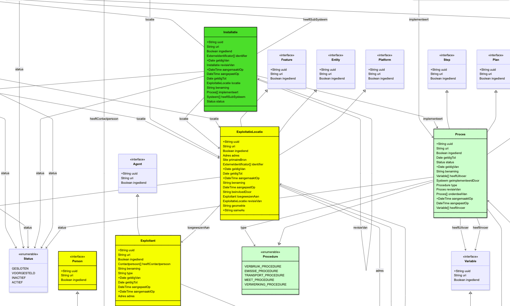

Geert Van Haute & Maxim Van de Wynckel
Departement Omgeving
26 februari 2026
TODO
Hoe kunnen we een datamodel ontwikkelen dat toekomstbestendig is en gebaseerd op bestaande standaarden zonder dat dit voor complexiteit zorgt bij de implementatie
maar ook ...
Hoe onderhouden we deze samenwerking op lange termijn, ook na de uitvoering van het project?
p-plan:Plan modelleren?"Uitdagingen
Groen = manueel, Blauw = automatisch
:Exploitatie a owl:Class ;
rdfs:label "Exploitatie"@nl ;
rdfs:comment "Een exploitatie is de uitrol van middelen door een exploitant op een exploitatie locatie leidend tot een milieueffect."@nl ;
# Klassenhierarchie afgeleid van OWL subclass relaties (en reasoning)
rdfs:subClassOf ssn:Deployment ;
# Primary key(s) afgeleid van mappings in de URI
hydra:search [ a hydra:IriTemplate ;
hydra:template "https://data.riepr.omgeving.vlaanderen.be/id/exploitatie/{exploitatielocatie}/{localId}"^^hydra:Rfc6570Template ;
hydra:mapping [ hydra:variable "exploitatielocatie" ; hydra:property sosa:isHostedBy ; hydra:required true ] ,
[ hydra:variable "localId" ; hydra:property adms:identifier ; hydra:required true ]
] ;
# Kardinaliteiten afgeleid van OWL restricties
rdfs:subClassOf [ a owl:Restriction ;
owl:onProperty rdfs:label ;
owl:minCardinality "1"^^xsd:nonNegativeInteger
] ;
rdfs:subClassOf [ a owl:Restriction ;
owl:onProperty ssn:deployedSystem ;
owl:someValuesFrom ssn:System ;
owl:minCardinality "0"^^xsd:nonNegativeInteger ;
] .
Voorbeelden:
adms:identifier → "aparte key value tabel"Regels zijn configuratie en wijzigen het achterliggende datamodel niet
CREATE TABLE exploitant ( -- Gegenereerd van: https://data.riepr.omgeving.vlaanderen.be/ns/riepr#Exploitant
uuid VARCHAR,
uri VARCHAR,
geldig_van DATE,
geldig_tot DATE,
aangemaakt_op TIMESTAMP,
aangepast_op TIMESTAMP,
type VARCHAR,
benaming VARCHAR,
ingediend BOOLEAN,
-- ...
PRIMARY KEY (uuid, geldig_van, aangemaakt_op)
);
COMMENT ON TABLE exploitant IS 'https://data.riepr.omgeving.vlaanderen.be/ns/riepr#Exploitant';
COMMENT ON COLUMN exploitant.geldig_van IS 'http://purl.org/dc/terms/issued';
COMMENT ON COLUMN exploitant.type IS 'http://purl.org/dc/terms/type';
COMMENT ON COLUMN exploitant.adres IS 'http://www.w3.org/ns/locn#address';
COMMENT ON COLUMN exploitant.aangepast_op IS 'http://purl.org/dc/terms/modified';
COMMENT ON COLUMN exploitant.geldig_tot IS 'http://purl.org/dc/terms/valid';
-- ...
// Gegenereerd van: https://data.riepr.omgeving.vlaanderen.be/ns/riepr#Exploitant
@Entity
@Table(name = "exploitant")
public class Exploitant {
@Id
@Column(name = "uuid")
private String uuid;
@Column(name = "uri")
private String uri;
// http://purl.org/dc/terms/created
@JsonProperty("dct:created")
@Column(name = "aangemaakt_op")
private Date aangemaaktOp;
// ...
}

Het is makkelijk om een complex datamodel te maken, het is moeilijker om iets complex zoals RIE-IEPR tot een eenvoudig model te herleiden.